注入模块（生成粒子分布）
本示例演示如何构建特定粒子分布。本文件中所使用输入文件及运行代码见 GitHub 示例代码。
粒子分布类型简介
在PASS程序中初始粒子分布由 Injection 命令实现，在 Injection 命令中，可以单独为每个束团设置不同的分布信息。
横向粒子分布
目前PASS程序支持生成的横向粒子分布有 水平垂直解耦的 2D 高斯分布、 4D KV分布、 4D 水袋分布、 4D 双曲线分布 、 2D X-Y 均匀分布。
其中 4D 分布是指在 4D 相空间 \((x, p_x, y, p_y)\) 中定义一个广义的超椭球边界。为了简化推导且不失一般性，我们引入 归一化坐标：
其中 \(a, b, c, d\) 分别是束流在对应维度上的 最大物理包络边界（硬边界）。在此归一化坐标系下，4D 超椭球边界简化为单位超球：
下面详细介绍各横向粒子分布：
独立2D高斯分布（Gaussian）
在 \(x-p_x\) 与 \(y-p_y\) 相空间中分别独立生成服从高斯分布的横向坐标。粒子在横向相空间中的分布采用 \(4\sigma\) 截断，即仅保留满足：
\[|x| \le 4\sigma_x, \quad |y| \le 4\sigma_y\]的粒子。
对于二维相空间高斯分布（\(x-p_x\) 与 \(y-p_y\)），不同 RMS 发射度对应的粒子包含比例如下：
\(\epsilon/\epsilon_{\mathrm{rms}}\)
截断范围
保留粒子比例
1
\(1\sigma\)
39.346934029%
2
\(\sqrt{2}\sigma\)
63.212055883%
4
\(2\sigma\)
86.466471676%
6
\(\sqrt{6}\sigma\)
95.021293163%
9
\(3\sigma\)
98.889100346%
16
\(4\sigma\)
99.966453737%
因此在 \(4\sigma\) 截断条件下，粒子损失比例极低（约 \(3.3\times10^{-4}\)），可近似认为完整覆盖高斯尾部。
具体截断比例可通过下面的函数进行计算：
import numpy as np def fraction_by_emittance(epsilon, epsilon_rms): fraction = 1 - np.exp(-epsilon / (2 * epsilon_rms)) print(f"eps/eps_rms = {epsilon/epsilon_rms}, particle proportion = {fraction:.9%}") for epsi in (1, 2, 4, 6, 8, 9, 16, 25, 36): fraction_by_emittance(epsilon=epsi, epsilon_rms=1)4D KV（Kapchinskij-Vladimirskij）分布
在 \(x-p_x-y-p_y\) 四维相空间中生成 均匀分布在四维超椭球表面上 的粒子分布，是一种只存在于四维球壳上的理想化分布。这种分布下粒子产生的空间电荷场在束团内部是严格线性的，可以实现空间电荷问题的严格解析求解。
积分掉两个维度后，KV分布在任意 2D 平面（如 \(x-p_x\) 平面）上的投影是一个均匀填充的椭圆。进一步积分掉一个维度后，KV分布在 1D 平面的投影是一个半椭圆（或半圆）分布。 根据积分可得：在 \(x-p_x\) 与 \(y-p_y\) 相平面上 KV分布的全发射度为RMS发射度的4倍 ，即KV分布下所有粒子均处在 \(2\sigma\) 截断范围内。但是在程序中依然设置为保留满足：
\[|x| \le 4\sigma_x, \quad |y| \le 4\sigma_y\]的粒子。
4D 水袋（Waterbag）分布
在 \(x-p_x-y-p_y\) 四维相空间中生成 均匀分布在四维超椭球内部 的粒子分布。
积分掉两个维度后，水袋分布在任意 2D 平面（如 \(x-p_x\) 平面）上的投影呈抛物线分布。进一步积分掉一个维度后，水袋分布在 1D 平面的投影是一个3/2次幂抛物线型分布。 根据积分可得：在 \(x-p_x\) 与 \(y-p_y\) 相平面上 水袋分布的全发射度为RMS发射度的6倍 ，即水袋分布下所有粒子均处在 \(\sqrt{6}\sigma\) 截断范围内。但是在程序中依然设置为保留满足：
\[|x| \le 4\sigma_x, \quad |y| \le 4\sigma_y\]的粒子。
4D 抛物线（Parabolic）分布
在 \(x-p_x-y-p_y\) 四维相空间中生成 密度从中心向外围随着r的增加呈抛物线递减 的粒子分布，这种分布比水袋分布更贴近真实加速器中偏向中心聚集的束流。
积分掉两个维度后，水袋分布在任意 2D 平面（如 \(x-p_x\) 平面）上的投影呈平方抛物线分布。进一步积分掉一个维度后，抛物线分布在 1D 平面的投影是一个5/2次幂抛物线型分布。 根据积分可得：在 \(x-p_x\) 与 \(y-p_y\) 相平面上 抛物线分布的全发射度为RMS发射度的8倍 ，即水袋分布下所有粒子均处在 \(\sqrt{8}\sigma\) 截断范围内。但是在程序中依然设置为保留满足：
\[|x| \le 4\sigma_x, \quad |y| \le 4\sigma_y\]的粒子。
Uniform（均匀分布）
在 \(x-y\) 平面生成在 \(\pm 4\sigma\) 范围内均匀的粒子，在 \(x-p_x\) 与 \(y-p_y\) 相空间中分别独立服从高斯分布。这种分布可以模拟电子枪等产生的初始束流。
纵向粒子分布
目前PASS程序支持生成的纵向粒子分布有 2D高斯分布 、 漂移束分布 、 匹配高频参数-纵向束长RMS值的分布 、 匹配高频参数-动量分散RMS值的分布 ：
2D高斯分布（Gaussian）
在 \(z-p_z\) 相空间中分别生成服从高斯分布的纵向坐标。粒子在纵向相空间中的分布采用 \(4\sigma\) 截断，即仅保留满足：
\[|z| \le 4\sigma_z\]的粒子。
漂移束分布（Coasting）
在 \(z-p_z\) 相空间中生成 \(z\) 服从均匀分布，\(p_z\) 服从高斯分布的纵向坐标。粒子在纵向相空间不做截断，纵向位置坐标最大为周长的一半，最小为负周长的一半。
匹配高频参数-纵向束长RMS值的分布（MatchZ）
在 \(z-p_z\) 相空间中生成同时满足高频参数及纵向束长限制（ \(sigma_z\) ）的纵向坐标。粒子在纵向相空间中的分布采用 \(2\sigma\) 截断，即仅保留满足：
\[|z| \le 2\sigma_z\]的粒子。
匹配高频参数-动量分散RMS值的分布（MatchDp）
在 \(z-p_z\) 相空间中生成同时满足高频参数及动量分散限制（ \(sigma_{dp}\) ）的纵向坐标。粒子在纵向相空间中的分布采用 \(2\sigma\) 截断，即仅保留满足：
\[|z| \le 2\sigma_z\]的粒子。
输入文件
{
"Beam Name": "proton",
"Number of Protons": 1,
"Number of Neutrons": 0,
"Number of Charges": 1,
"Transition Gamma": 4.8,
"Number of turns": 5,
"Circumference (m)": 251.327,
"Backend (gpu/cpu)":"cpu",
"Number of GPU devices": 1,
"Device Id": [
0
],
"Output directory": "./output",
"Is plot figure": true,
"Sequence": {
"Injection": {
"S (m)": 0.0,
"Command": "Injection",
"bunch0": {
"Kinetic Energy per Nucleon (eV/u)": 45e6,
"Number of Real Particles": 100000000000.0,
"Number of Macro Particles": 100000.0,
"Is Load Distribution from File": false,
"Distribution File Path": "",
"Total Injection Turns": 1,
"Injection Interval": 1,
"Alpha x": -2.614303952,
"Alpha y": 1.57442348,
"Beta x (m)": 0.5,
"Beta y (m)": 0.5,
"Emittance x (m'rad)": 0.00019999999999999998,
"Emittance y (m'rad)": 9.999999999999999e-05,
"Dx (m)": 0.0,
"Dpx": 0.0,
"Sigma z (m)": 30,
"Sigma dp/p": 0.005,
"Transverse dist": "gaussian",
"Longitudinal dist": "matchz",
"RF Voltage (V)": 100e3,
"RF Phase (rad)": 0.5235987755982988,
"Harmonic Number": 1,
"Harmonic ID of this bunch": 0,
"RF S Position Refer to Inj. Point (m)": 0.0,
"Offset x": {
"Is Offset": false,
"Is Load From File": false,
"File Path": "",
"File Time Kind": "turn",
"Offset Position (m)": 0.0,
"Offset Momentum (rad)": 0.0
},
"Offset y": {
"Is Offset": false,
"Is Load From File": false,
"File Path": "",
"File Time Kind": "turn",
"Offset Position (m)": 0.0,
"Offset Momentum (rad)": 0.0
},
"Is Save Initial Distribution": true,
"Insert Particle Coordinate": [[0,0,0,0,0,0]]
}
},
"StatMonitor1":{
"S (m)": 0.0,
"Command": "StatMonitor"
}
}
}
运行命令
cd PASS\example\01_generate_distribution
python run.py --beam0=./beam0.json
根据上面的输入文件，将生成在横向满足Gaussian分布，在纵向满足MatchZ分布的束团。修改下面这两行参数，可调整生成的束团分布类型：
"Transverse dist": "gaussian",
"Longitudinal dist": "matchz",
其中横向分布的value有：gaussian、kv、waterbag、parabolic、uniform，纵向分布的value有：gaussian、coasting、matchz、matchdp。
在生成纵向gaussian与coasting分布时，不需要高频相关参数，在生成matchz与matchdp分布时，需要提供高频参数。
模拟结果
下面将展示保持上述输入文件中Twiss、发射度、高频等参数不变，只改变分布类型时，模拟所得粒子分布图片。
横向Gaussian分布：
{kind=link}
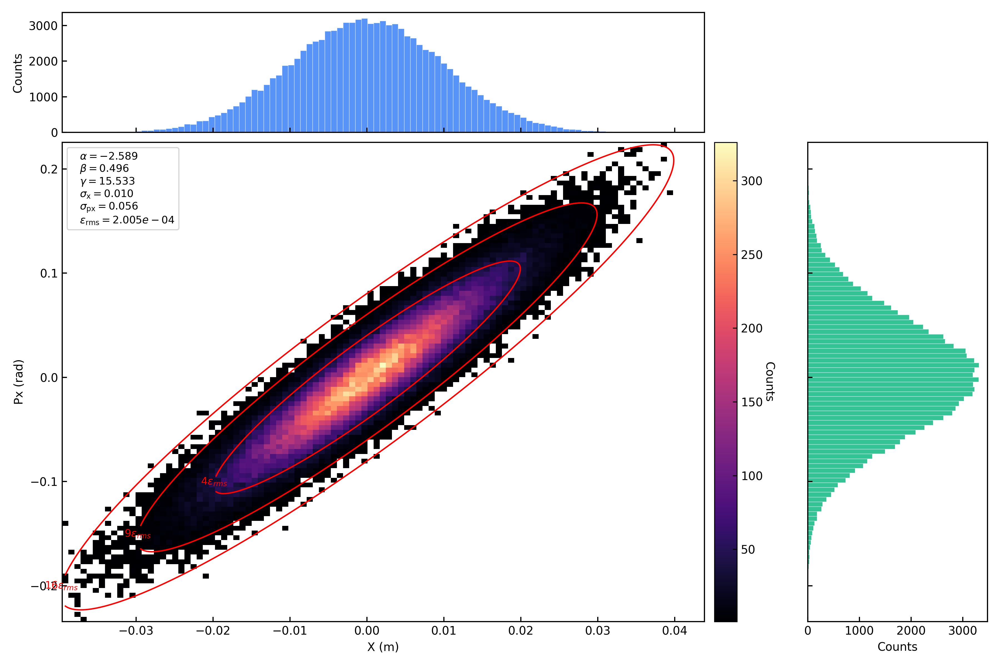
Figure 1. Transverse gaussian distribution: x-px

Figure 2. Transverse gaussian distribution: y-py
{kind=link}
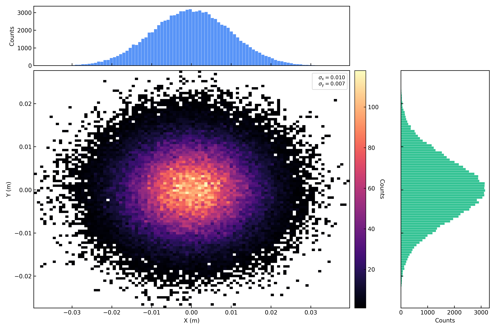
Figure 3. Transverse gaussian distribution: x-y
横向KV分布：
{kind=link}
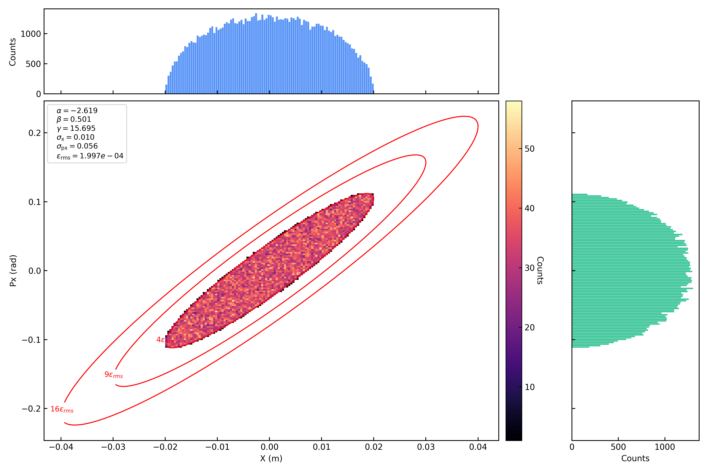
Figure 4. Transverse KV distribution: x-px
{kind=link}
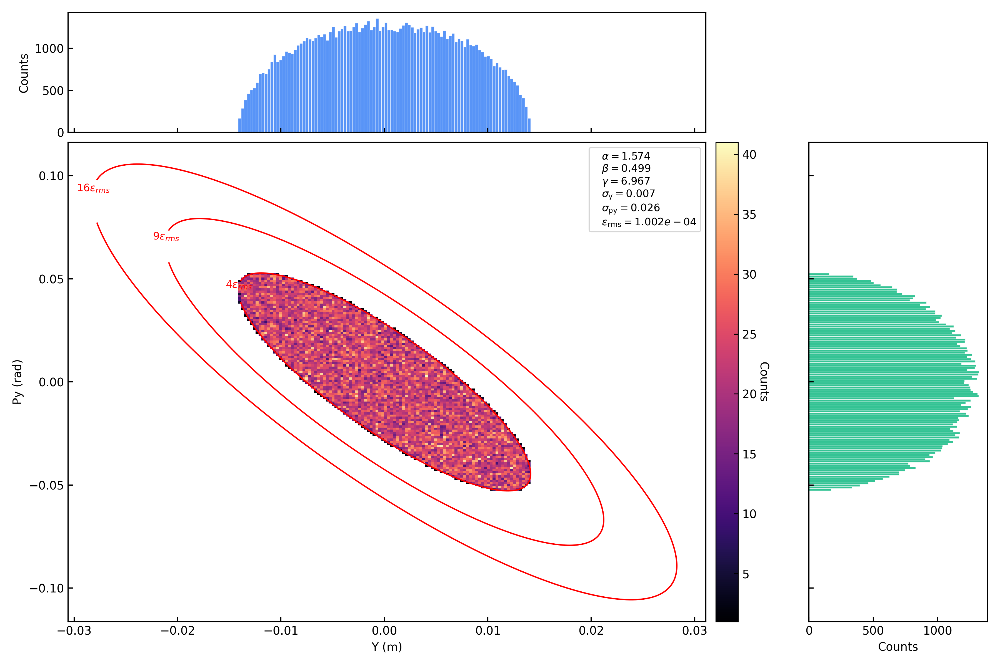
Figure 5. Transverse KV distribution: y-py
{kind=link}
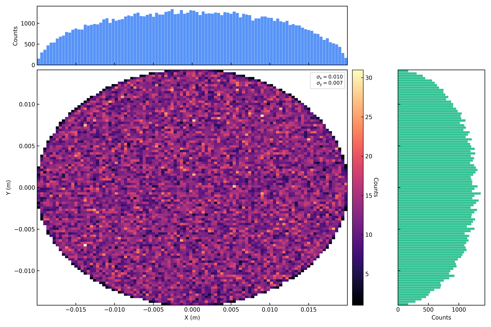
Figure 6. Transverse KV distribution: x-y
横向水袋分布：
{kind=link}
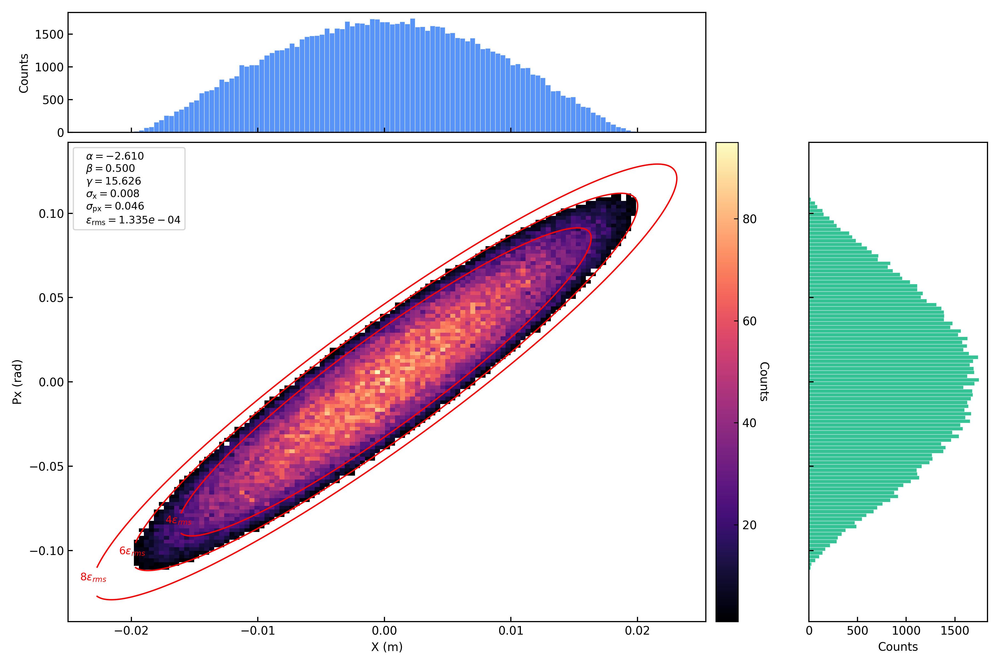
Figure 7. Transverse waterbag distribution: x-px
{kind=link}
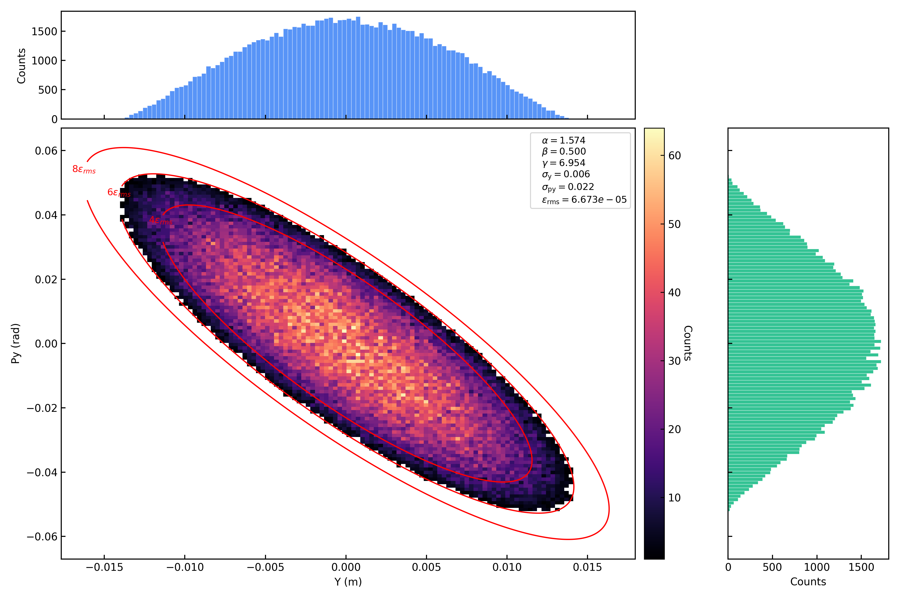
Figure 8. Transverse waterbag distribution: y-py
{kind=link}
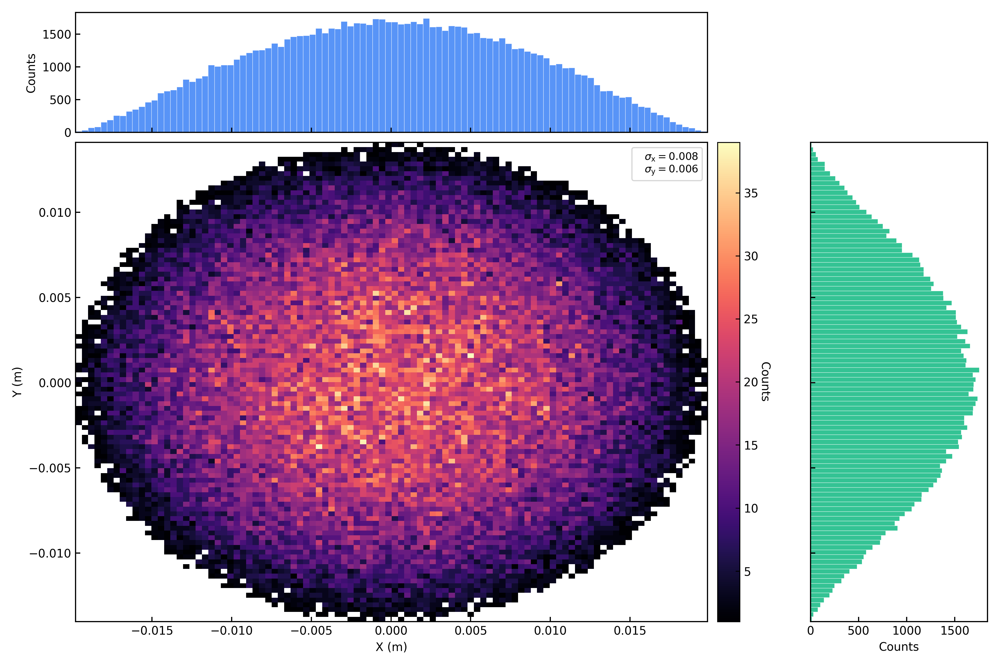
Figure 9. Transverse waterbag distribution: x-y
横向抛物线分布：

Figure 10. Transverse KV distribution: x-px

Figure 11. Transverse KV distribution: y-py

Figure 12. Transverse parabolic distribution: x-y
横向均匀分布：

Figure 13. Transverse uniform distribution: x-px

Figure 14. Transverse uniform distribution: y-py

Figure 15. Transverse uniform distribution: x-y
纵向MatchZ分布：
{kind=link}
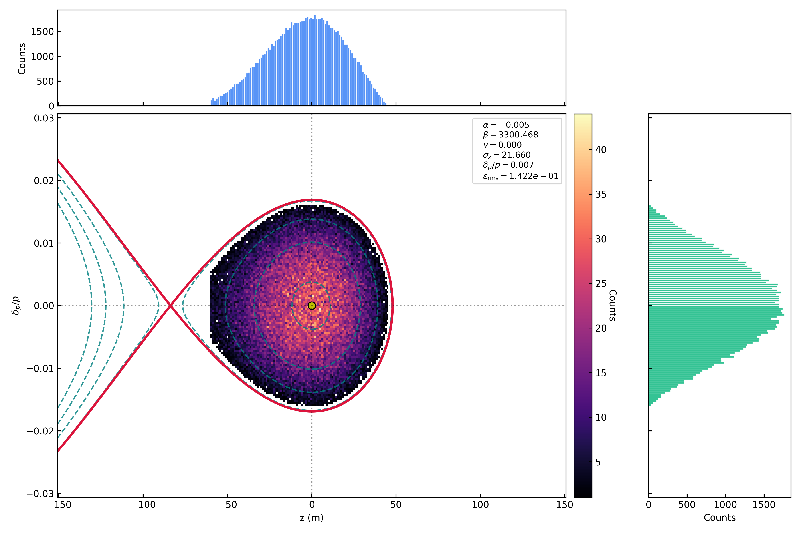
Figure 16. Longitudinal matchz distribution: z-pz
纵向MatchDp分布：
{kind=link}
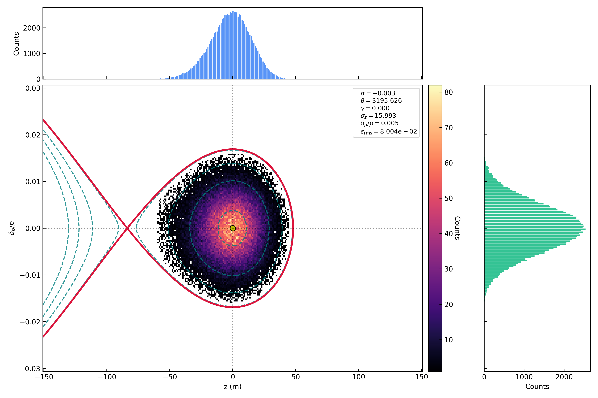
Figure 17. Longitudinal matchdp distribution: z-pz
纵向Gaussian分布：
{kind=link}
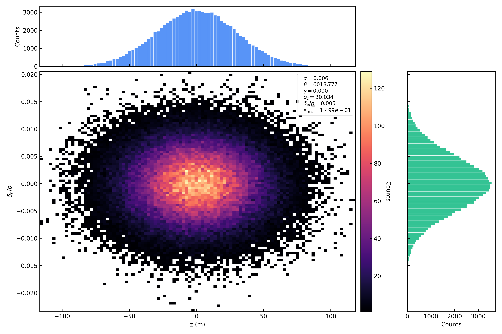
Figure 18. Longitudinal gaussian distribution: z-pz
纵向Coasting分布：
{kind=link}
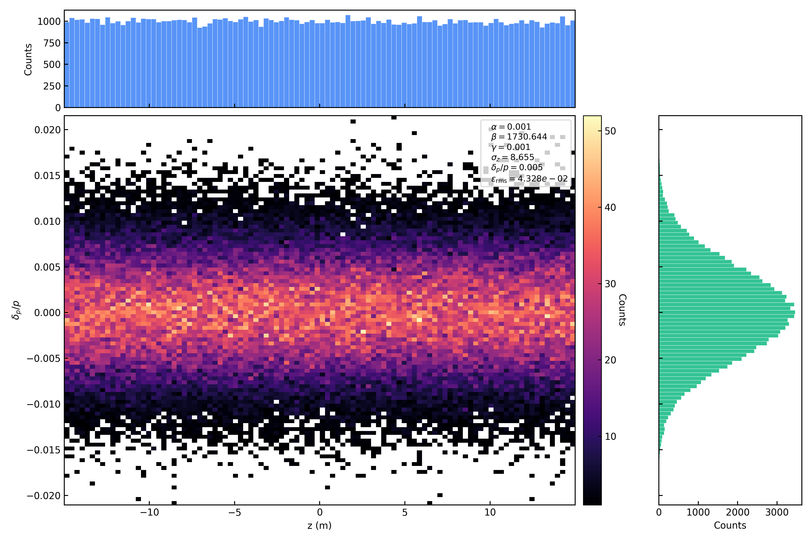
Figure 19. Longitudinal coasting distribution: z-pz